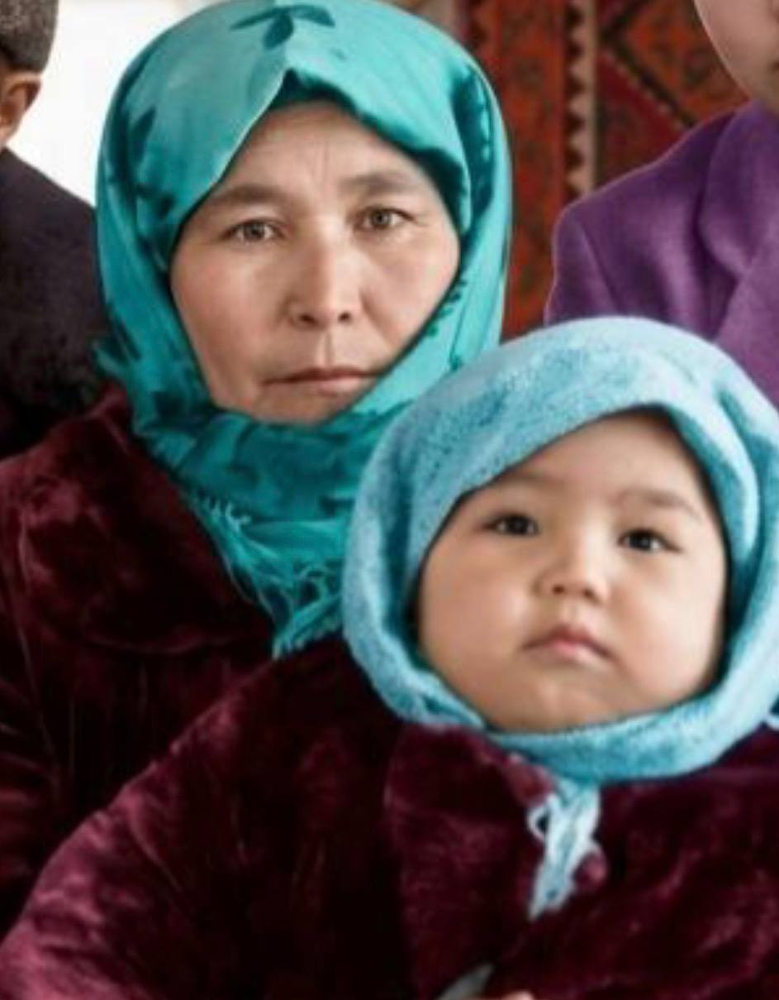
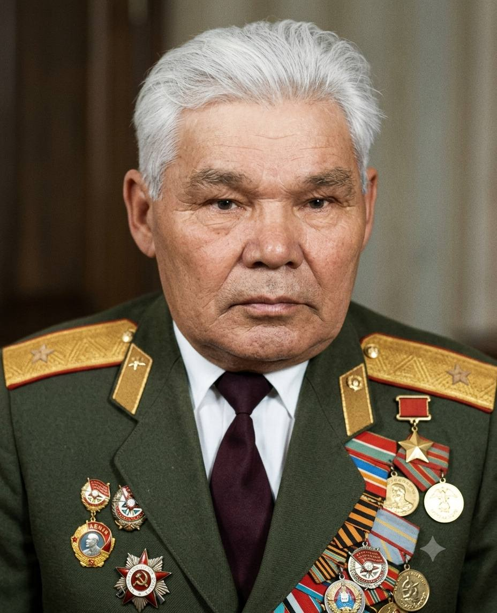
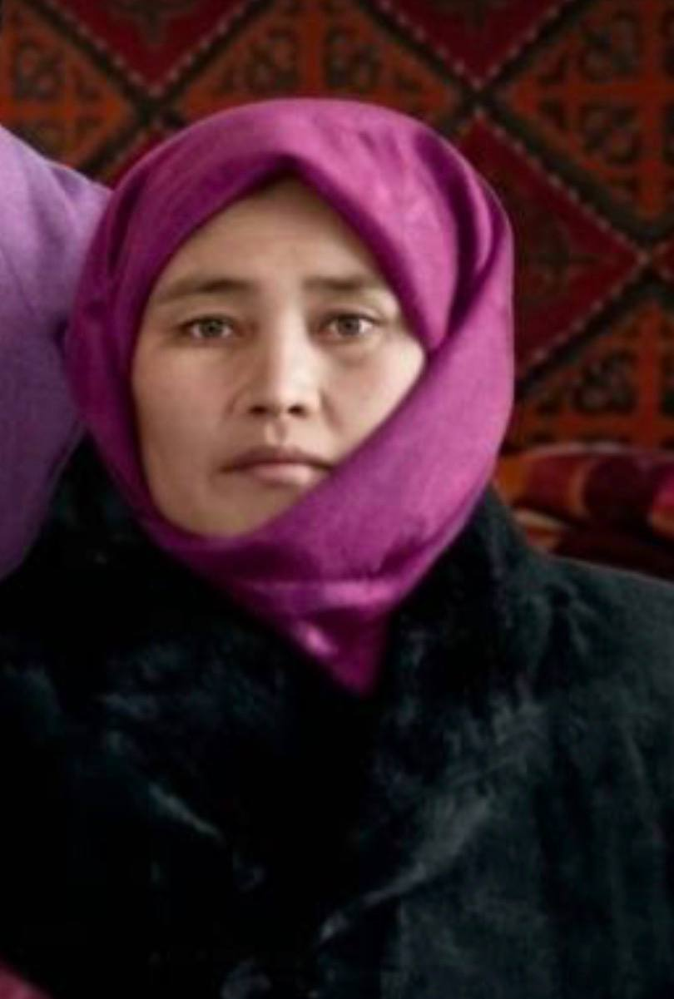
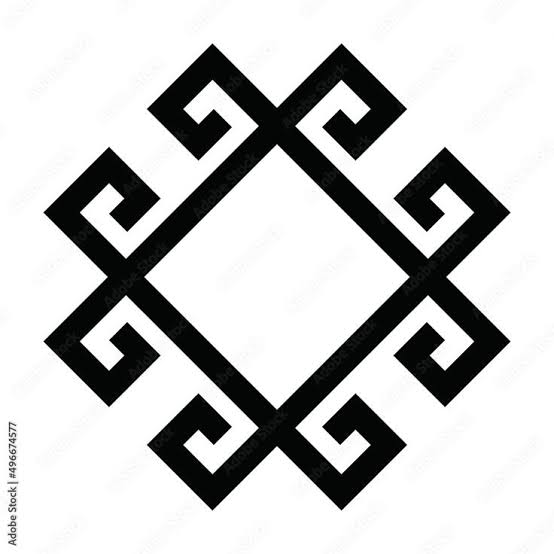
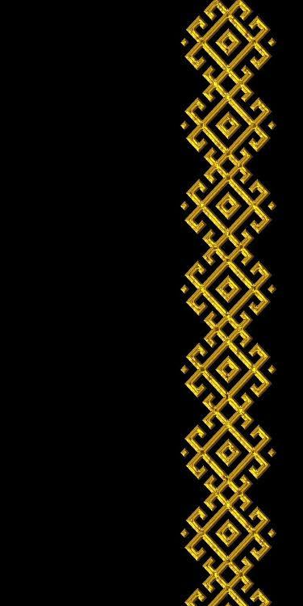
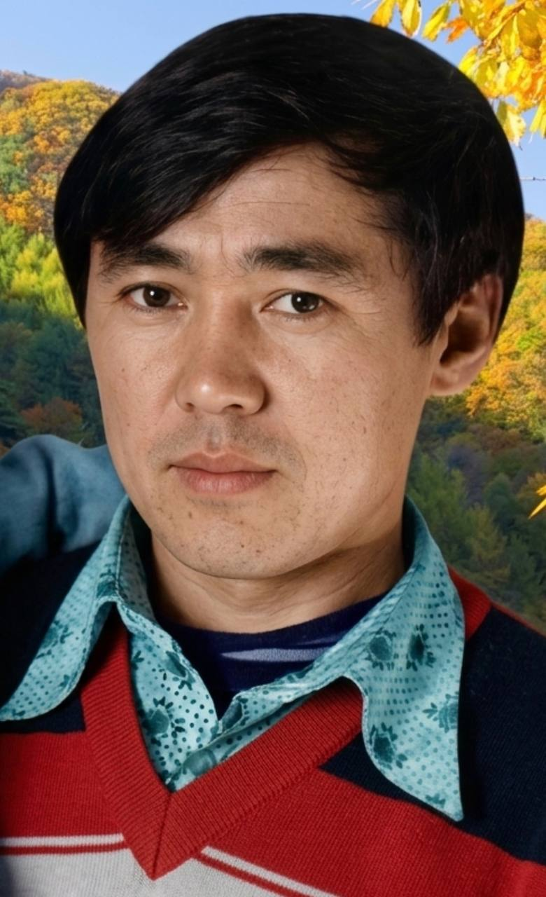
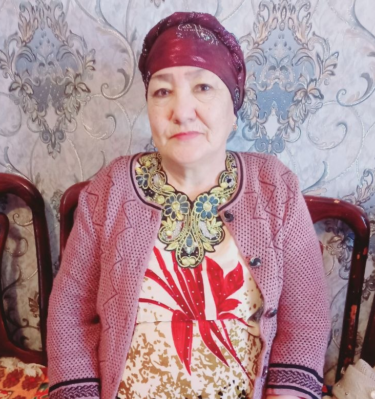
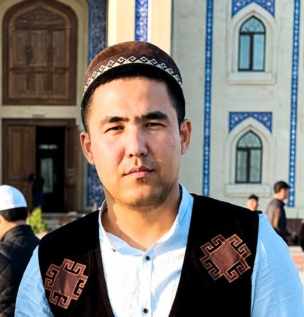

1-ÁWLAD: Úlken Ata hám Ápalarimiz

Keljanov Najimatdin
1916 — 1983 (Iyul)
Birinshi Ata
❮ ➔ ❯
Joldası

Najimova Bazargul
1914 — 1995 (May)
Úlken Apa
Ekinshi Ata hám Ápalarimiz

Keljanov Sharapatdin
1924 — 1995 (Fevral)
Ekinshi Ata
❮ ➔ ❯
Joldası

Sultanyazova Gúlayım
1928 jıl
Shańaraq Kelini (Áje)
3-ÁWLAD: Sharapatdin hám Gúlayımnıń Perzentleri

Gulzar Sharapatdinovna
1949 — tiri
1-Qızı
❮ ➔ ❯
Kúyewi

Seytimbetov Jumamurat
1947 — 2023
Kúyew Bala

Xayratdin Sharapatdinovich
1951 jıl 24 Avg
2-Ulı
❮ ➔ ❯
Joldası

Awezova Asiya Qallievna
1959 jıl 14 May
Shańaraq Kelini
Ziyratdin
1954 jıl
3-Ulı
❮ ➔ ❯
Joldası
Qizlargul
Belgisiz
Shańaraq Kelini
Gulsanem
Belgisiz
4-Qızı
❮ ➔ ❯
Kúyewi
Sheripbay
Belgisiz
Kúyew Bala
Shaxsanem
Belgisiz
5-Qızı
Karamatdin
Belgisiz
6-Ulı
❮ ➔ ❯
Joldası
Anar
Belgisiz
Shańaraq Kelini
Nuratdin
Belgisiz
7-Ulı
❮ ➔ ❯
Joldası
Aysha
Belgisiz
Shańaraq Kelini
Genjexan
Belgisiz
8-Qızı
Gulbaxar
Belgisiz
9-Qızı
❮ ➔ ❯
Kúyewi
Baxtiyar
Belgisiz
Kúyew Bala
4-ÁWLAD: Xayratdin hám Asiyanıń ul-qızları
Shamshetdin
1980 jıl 10 Iyun
1-Ulı
❮ ➔ ❯
Joldası
Gulmiyra
1981 jıl 11 Fev
Kelin
Baxtiyar
1983 jıl 8 Yanv
2-Ulı
❮ ➔ ❯
Joldası
Gulchexra
1983 jıl 4 Noy
Kelin
Tursinay
29 Aprel
3-Qızı
❮ ➔ ❯
Kúyewi
Daryabay
1985 jıl 10 Fev
Kúyew Bala
Quralay
1988 jıl 17 Mart
4-Qızı
❮ ➔ ❯
Kúyewi
Salamatdin
1986 jıl 4 Okt
Kúyew Bala

Nurmuxammeddin
1990 jıl 20 May
5-Ulı (Boydoq)
Nurlibek
2012 jıl 1 Dek
Kenje Ulı
Gulziyra
1991 jıl 30 Noy
6-Qızı
❮ ➔ ❯
Kúyewi
Erkinbay
1991 jıl 13 Okt
Kúyew Bala
5-ÁWLAD: Aqlıqlar (Uldan tuwılǵan perzentler)
Dilfayruz
2006 jıl 28 Yanv
Shamshetdin Qızı
Dilshoda
2007 jıl 22 Noy
Shamshetdin Qızı
Maxinur
2010 jıl 30 May
Shamshetdin Qızı
Botirbek
2013 jıl 30 Dek
Shamshetdin Ulı
Mubina
2021 jıl 25 Dek
Shamshetdin Qızı
Ismoil
2021 jıl 21 Apr
Baxtiyar Ulı
Munira
2022 jıl 16 Iyul
Baxtiyar Qızı
Ibrahim
2025 jıl 25 Iyul
Baxtiyar Ulı
5-ÁWLAD: Aqlıqlar (Qız tárepten tuwılǵanlar)
Jasmina
2022 jıl 21 Apr
Tursinay Qızı
Ruslan
2015 jıl 20 Yanv
Quralay Ulı
Ranogul
2018 jıl 17 Mart
Quralay Qızı
Aydos
2020 jıl 11 Iyun
Gulziyra Ulı